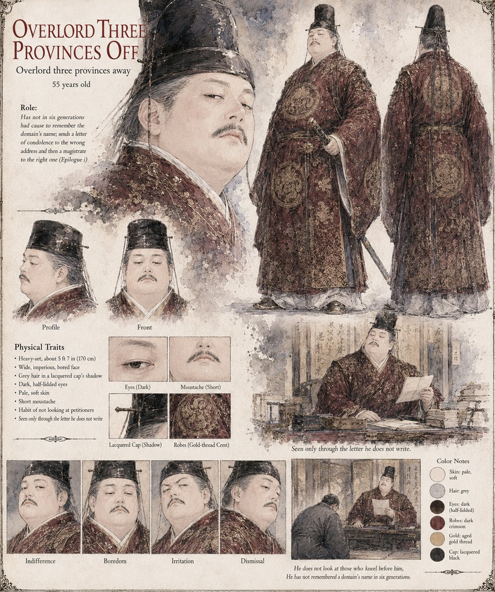

The Overlord Three Provinces Off
Overlord three provinces away · has not in six generations had cause to remember the domain’s name · 55 by his sheet
The overlord three provinces away, to whom Kagetani has been a name he has not once in six generations had cause to remember. When the domain ends he sends a letter of condolence to the wrong address and then a magistrate to the right one (Epilogue i). He is on the page only through the letter.
The manuscript gives him no description, and the pack’s note for him is Seen only through the letter he does not write. The sheet shows a heavy-set man of about 5 ft 7 in with a wide, imperious, bored face, a short moustache, dark half-lidded eyes, pale soft skin and grey hair in the shadow of a lacquered black cap, in heavy dark-crimson brocade with gold-thread crests and a ceremonial long sword, and a habit of not looking at petitioners. Its panels are Indifference, Boredom, Irritation and Dismissal; its scenes show him front and back at full length, reading a letter at a desk among stacks of papers, and seated before a figure kneeling with its back turned, captioned He does not look at those who kneel before him. He has not remembered a domain’s name in six generations.